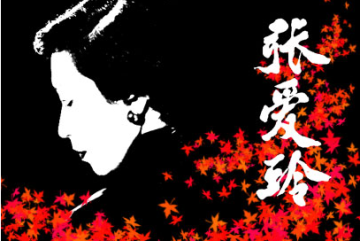

张爱玲经典爱情语录大全 精选100条张爱玲语录爱情观
作者:qqtn强柔 人气:0
1.以下，你相信偶像剧，那就算了。以上，你还相信偶像剧，那就完了。
2.书是最好的朋友。唯一的缺点是使我近视加深，但还是值得的。
3.爱情本来并不复杂，来来去去不过三个字，不是“我爱你，我恨你，”“便是算了吧，你好吗？对不起
4.如果你不调戏女人，她说你不是一个男人；如果你调戏她，她说你不是一个上等人。
5.能开口说出的委屈，便不是委屈。能离开的人，便不算是爱人。
6.也许每一个男子全都有过这样的两个女人，至少两个。娶了红玫瑰，久而久之，红的变了墙上的一抹蚊子血，白的还是“窗前明月光”；娶了白玫瑰，白的便是衣服上的一粒饭粘子，红的却是心口上的一颗朱砂痣。
7.分手时，不哭。当然，不是要你一点都不哭。当着面，别哭，背地里，往死里哭。
8.有的事情，没法说明。你觉得值，就值，你觉得不值，别人说值，你也觉得不值。
9.在风平浪静的日子里，留点空间给自己，留点空间给对方，留点美好给距离。
10.我要你知道，在这个世界上总有一个人是等着你的，不管在什么时候，不管在什么地方，反正你知道，总有这么个人。
11.一个知己就好象一面镜子，反映出我们天性中最优美的部分。
12.善于妥协的女人，很宝贵。但是，只善于妥协的女人，很廉价。
13.放好心态，失去的东西，不要悲伤，你就当，他本身就不属于你。
14.有的时候不要太计较，男人都有点粗枝大叶，忘了一件事，不代表他不爱你，别自己吓自己。
15.女人的心慈手软，与男人的口是心非，成正比。
16.女人，往往喜欢坦白心事，男人，则恰恰相反。
17.要做的事情总找得出时间和机会；不要做的事情总找的出藉口。
18.失望，有时候也是一种幸福，因为有所期待所以才会失望。因为有爱，才会有期待，所以纵使失望，也是一种幸福，虽然这种幸福有点痛
19.要知道，一个男人好与坏，不是看他花心还是专一，自古男人都花心，而是要看，有没有控制力。
20.不管你的条件有多差，总会有个人在爱你。不管你的条件有多好，也总有个人不爱你。
21.不要去好奇，不要去关心，他的现任女友长得如何，身材如何，你这样只是自寻烦恼罢了。
22.不要说，这世上没个好男人了，不要去记恨那个抛弃你的人，毕竟曾经爱过你，疼过你，宽容会让你更美丽。
23.有时候，学会把失望当次一种收获，因为有祈望，才会有失望。
24.不要妄想试图改变谁，因为谁也改变不了谁，只有，他愿不愿意为你改变
25.回忆永远是惆怅。愉快的使人觉得：可惜已经完了，不愉快的想起来还是伤心。
26.你清纯就罢，你假装清纯，比丑还难看，明白么？
27.有没有发现，往往刻骨铭心的爱恋。通常，没有好结果。
28.你可以虚荣，因为，那是女人的天性，但，不要让自己变成为别人增加虚荣的工具。
29.自由可贵，但是，每天数以万计的人，在用自由换取爱情。
30.他说，我累了，让我冷静一段时间，好么？你就说好，因为，他是来通知你的，不是来征得你同意的。
31.勇敢的女人，永远比懦弱的女人美丽。如果，你的爱人不爱你，我劝你还是勇敢点分离，好过，懦弱的纠缠。
32.不要在你哭泣的时候，说气话，下决定，你会后悔的。
33.不要整天问，你爱我么？当你问的时候，他就不爱你了。
34.嗯，不要在哪几个场合相信男人的话呢？床上，他开心的时候，有求于你的时候，犯错的时候。
35.独立，永远。不管，感情还是金钱。
36.人因为心里不快乐，才浪费，是一种补偿作用。
37.对于不会说话的人，衣服是一种语言，随身带着的是袖珍戏剧。
38.替别人做点事，又有点怨，活着才有意思，否则太空虚了。
39.一个人，如果没空，那是因为他不想有空，一个人，如果走不开，那是因为不想走开，一个人，对你借口太多，那是因为不想在乎。
40.人永远是寂寞而自我的生物。无论多么真诚的说出自己的爱，也总会有无法被理解的心情。
41.所有爱着的人，爱过的人，都做着同一件事，犯贱。
42.能够爱一个人爱到问他拿零用钱的程度，都是严格的考验。
43.烟，和酒，从古至今，被公认为两大毒药。而对，女人，爱情这一样，足以致命。
44.你问我爱你值比值得，其实你应该知道，爱就是不问值不值得。
45.不是所有的努力都会成功，但是，不努力，就一定不会成功。
46.一个人在恋爱时最能表现出天性中崇高的品质。这就是为什么爱情小说永远受人欢迎——不论古今中外都一样。
47.小心眼，嫉妒心，仇恨，报复，女人的伎俩不过如此，你要施展没关系，关系的是你别被人发现。
48.打扮的再美，穿的再昂贵，那只是个幌子，用善良做的外衣才是真的美。
49.要明白一个道理，男人可是轻易的喜欢一个人，但不会轻易的爱上一个人。
50.时间，可以了解爱情，可以证明爱情，也可以推翻爱情。
51.女人，恋爱的时候，就像，与世隔绝般。
52.尽量做个优雅的女子。千万别做作，因为，做作的女人，不仅女人讨厌，男人更讨厌。
53.如果我们责怪爱情伤害勒我们，那请问，开始的时候是不是你点头答应爱情的来临，
54.不要想尽办法的向很多人炫耀，你有很多男朋友或者男性朋友。因为，别人不仅不会羡慕你，只会看轻你。
55.抓住男人的不二法门，应该就是，永远不要让他满足。
56.如果情感和岁月也能轻轻撕碎，扔到海中，那么，我愿意从此就在海底沉默。你的言语，我爱听，却不懂得，我的沉默，你愿见，却不明白.
57.我们再也回不去了！
58.我要你知道，在这个世界上总有一个人是等着你的，不管在什么时候，不管在什么地方，反正你知道，总有这么个人。
59.于千万人之中，遇见你要遇见的人。于千万年之中，时间无涯的荒野里，没有早一步，也没有迟一步，遇上了也只能轻轻地说一句：“哦，你也在这里吗？”
60.一个人最大的缺点，不是自私，野蛮，任性，而是偏执的爱着一个不爱自己的人。
61.人永远是寂寞而自我的生物无论多么真诚的说出自己的爱,也总会有无法被理解的心情
62.回忆这东西若是有气味的话，那就是樟脑的香，甜而稳妥，像记得分明的块乐，甜而怅惘，像忘却了的忧愁。
63.不管你的条件有多差,总会有个人在爱你,不管你的条件有多好,也总有个人不爱你
64.不要做女强人，要做强女人
65.女孩子要自爱，不管你遇到多大的打击，不管你遇到的情况多么悲凉，借故堕落，也是堕落，越是不爱自己，越是没人爱你。
66.说过的话一定要做到，哪怕是很愚蠢的，也总比言而无信的好。
67.美貌，智慧，金钱，很多事，都是天生注定的，别想用你那嫉妒心，改变什么。
68.不要妄想试图改变谁，因为谁也改变不了谁，只有，他愿不愿意为你改变。
69.如果我不爱你，我就不会思念你，我就不会妒忌你身边的异性，我也不会失去自信心和斗志，我更不会痛苦。如果我能够不爱你，那该多好。
70.我喜欢钱，因为我没吃过钱的苦，不知道钱的坏处，只知道钱的好处。
71.不卑不亢，从容优雅，面对一切。
72.心里能装着一些时间带不走的淡淡悲伤，也是一种幸福。
73.就算，眼前的这个男人，千般好，万般好，处处是优点，他不爱你，这个缺点，你永远改变不了。
74.心里能装着一些时间带不走的淡淡悲伤,也是一种幸福
75.有的时候不要太计较,男人都有点粗枝大叶,忘了一件事，不代表他不爱你，别自己吓自己
76.分手时,不哭当然,不是要你一点都不哭 当着面,别哭,背地里,往死里哭。
77.自由可贵，但是，每天数以万计的人，在用自由换取爱情
78.有的事情,没法说明 你觉得值,就值,你觉得不值,别人说值,你也觉得不值
79.女人,恋爱的时候,就像,与世隔绝般
80.在风平浪静的日子里,留点空间给自己,留点空间给对方,留点美好给距离
90.你可以虚荣，因为，那是女人的天性，但，不要让自己变成为别人增加虚荣的工具
91.女人的心慈手软，与男人的口是心非，成正比
92.一个人最大的缺点,不是自私,野蛮,任性,而是偏执的爱着一个不爱自己的人
93.有时候，学会把失望当次一种收获，因为有祈望，才会有失望
94.所有爱着的人,爱过的人,都做着同一件事,犯贱。
95.女人，往往喜欢坦白心事，男人，则恰恰相反。
96.如果我们责怪爱情伤害勒我们,那请问,开始的时候是不是你点头答应爱情的来临
97.有些爱给了你很多机会，却不在意、不在乎，想重视的时候已经没机会爱了。
98.有些话埋藏在心中好久，没机会说，等有机会说的时候，却说不出口了。
99.替别人做点事，又有点怨，活着才有意思，否则太空虚了。
100.女人真是幸运——外科医生无法解剖她们的良心。
加载全部内容